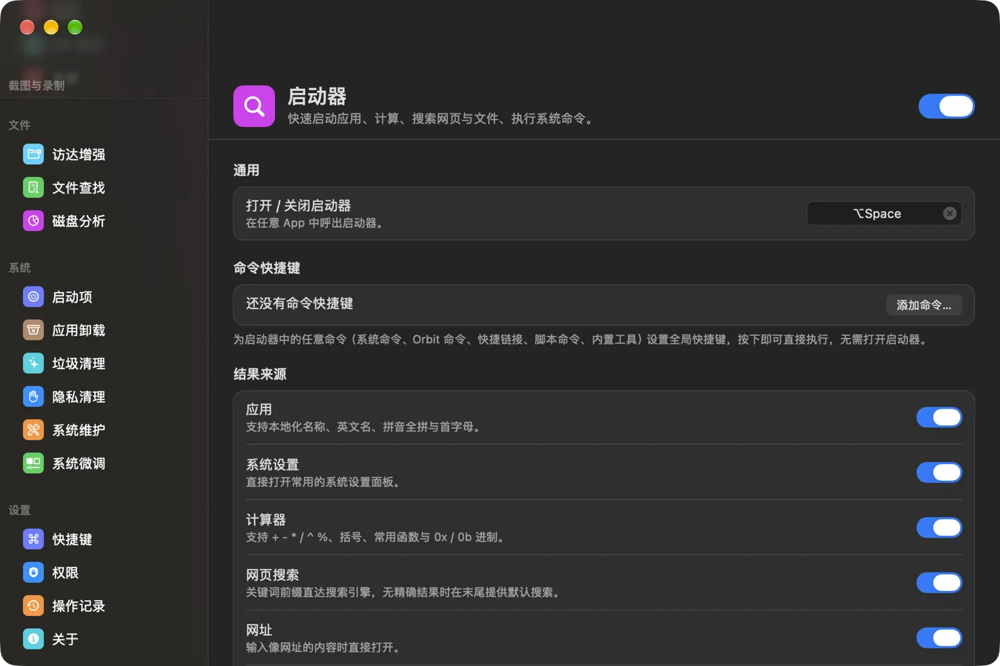
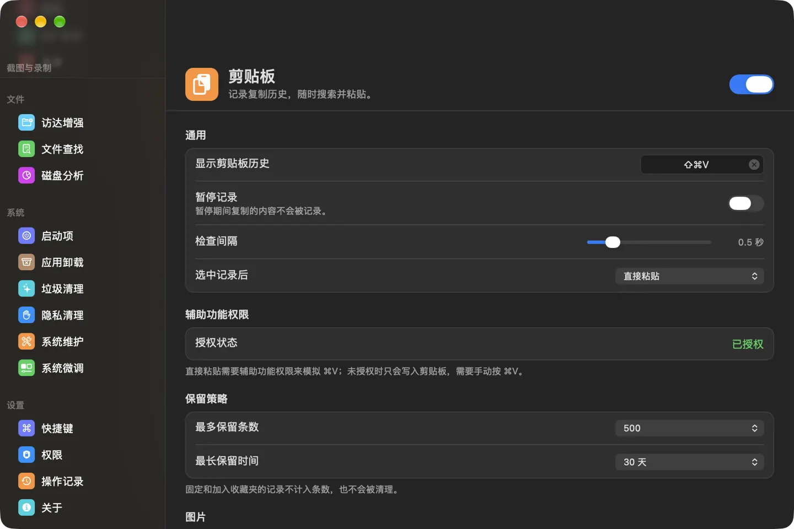
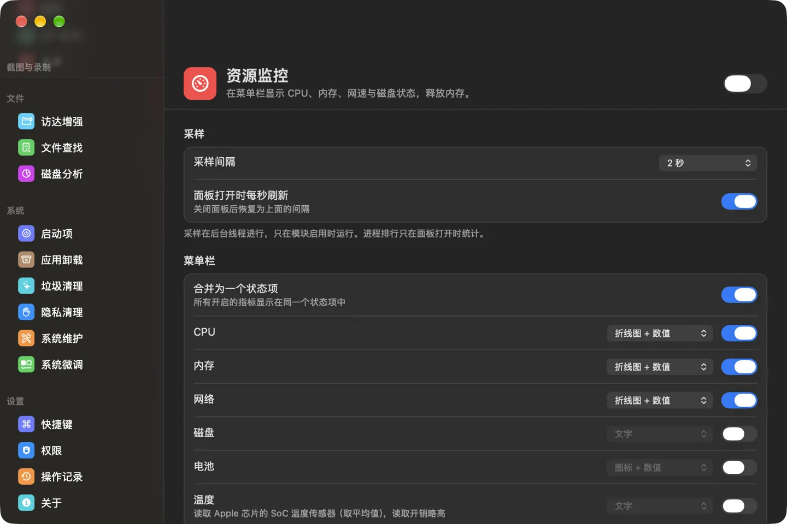
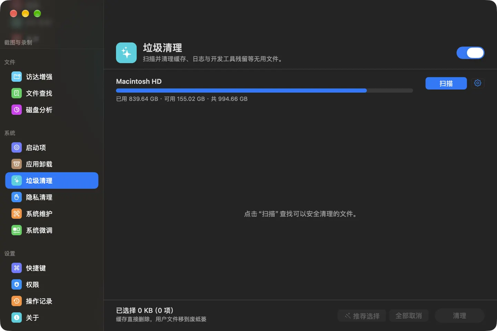

macOS 菜单栏效率工具合集 · 控制中心在线
一个进程，
十七个模块在轨运行
启动器、窗口管理、剪贴板、菜单栏整理、截图录屏、访达增强、文件查找、启动项管理、应用卸载与垃圾清理——全部收进一个常驻菜单栏的轻量进程，每个模块都能单独启停。
macOS 13.0 及以上 · 已经过 Apple 公证 · 最新版本 1.0.1
- 17
- 功能模块
- 26
- 窗口排列动作
- 120
- 垃圾清理规则
- 54
- 项系统微调
启动器
01 / 模块舱
每颗卫星，都是一款可以单独启停的工具
停用的模块不注册快捷键，也不运行任何后台任务。按轨道切换，看看每个模块能做什么。
02 / 舱内视图
所有模块，收在同一个控制中心里
侧边栏按效率、截图与录制、文件、系统四组排列；每个模块一页设置，顶部开关随时启停。截图为简体中文界面。




03 / 飞行守则
十几款工具合在一起，规矩只有一套
- R-01
按需启停
停用的模块不注册快捷键，也不运行任何后台任务。
- R-02
快捷键随你改
所有快捷键都在控制中心的「快捷键」页统一修改；启动器里的任意命令也能绑定全局快捷键。
- R-03
操作留痕
清理、卸载、启动项等破坏性操作的结果，统一记录在「操作记录」页。
- R-04
配置随身带
设置可以导出为
.orbitconfig文件，在另一台 Mac 上双击即可还原。 - R-05
三种语言，三种外观
简体中文、繁體中文、English 随时切换，无需重启；外观可选浅色、深色或跟随系统。
- R-06
按芯片自动更新
内置 Sparkle 自动更新，默认每天检查一次，只下载与本机芯片匹配的版本。
04 / 授权清单
用到哪个功能，才请求哪项权限
首次使用相关功能时 Orbit 会提示授权，也可以在控制中心的「权限」页统一查看。
访达右键菜单需要在「系统设置 › 通用 › 登录项与扩展 › 访达扩展」中启用 Orbit Finder，访达增强设置页有直达按钮。
05 / 发射窗口
选择与你的 Mac 匹配的安装包
不确定是哪种芯片时，打开「苹果菜单 › 关于本机」，看「芯片」或「处理器」一栏。打开 DMG，把 Orbit 拖进「应用程序」文件夹，再从「应用程序」中打开即可。
06 / 常见问题
打开时提示「无法验证开发者」？
安装包已经过 Apple 公证，正常不会出现。如果从其他渠道获得安装包，请到本页重新下载。
授权后功能仍不可用？
屏幕录制等权限授权后需要重新打开 Orbit。请确认只运行了一份 Orbit，并且它位于「应用程序」文件夹中。
如何卸载 Orbit？
先在「控制中心 › 权限」中卸载特权辅助程序（如已安装），退出 Orbit 后把它移到废纸篓即可。
部分实现移植或参考了这些开源项目： Rectangle、Maccy、OpenInTerminal、Hidden Bar、Ice、Thaw、RClick、Pearcleaner、MangoDisk、Sparkle、SnapKit、MMKV、GRDB。